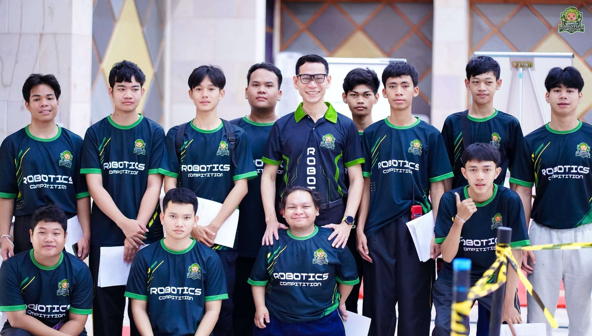

"เชี่ยวชาญเทคโนโลยีขั้นสูง มุ่งสู่นวัตกรรมซอฟต์แวร์แห่งอนาคต" หลักสูตรทันสมัยที่มุ่งเน้นการลงมือปฏิบัติจริง พร้อมก้าวสู่ Full-Stack Developer, AI & Data Scientist และวิศวกรซอฟต์แวร์ระดับสากล
ระยะเวลาศึกษา
หน่วยกิตขั้นต่ำ
อัตราโอกาสได้งานทำ
เครือข่ายศิษย์เก่า
โครงสร้างเชิงเป้าหมาย ผลลัพธ์การเรียนรู้ และทิศทางเพื่อสร้างบัณฑิตที่ตอบโจทย์อนาคต
ปรัชญานี้สะท้อนอัตลักษณ์สำคัญ 3 ด้าน ได้แก่ ความเชี่ยวชาญในวิชาชีพคอมพิวเตอร์ การมีคุณธรรมจริยธรรมวิชาชีพ และการพัฒนานวัตกรรมนำไปใช้พัฒนาท้องถิ่น ซึ่งเชื่อมโยงโดยตรงกับวิสัยทัศน์พันธกิจเพื่อการร่วมขับเคลื่อนสังคมของมหาวิทยาลัยราชภัฏ
ฝึกฝนทักษะการเขียนโปรแกรม โครงสร้างข้อมูล อัลกอริทึม และระบบฐานข้อมูลระดับเข้มข้น
ยึดมั่นในจรรยาบรรณวิชาชีพไอที เคารพกฎหมายทรัพย์สินทางปัญญา และ พ.ร.บ. คอมพิวเตอร์
สร้างสรรค์โครงงานและแอปพลิเคชันที่ช่วยแก้ปัญหาและยกระดับเศรษฐกิจชุมชนจริง
เตรียมพร้อมทักษะแห่งอนาคต ผสานทฤษฎีเทคโนโลยีขั้นสูงเข้ากับการลงมือปฏิบัติการจริงในห้องแล็บที่ทันสมัย
โอกาสกว้างขวางในตลาดงานสายเทคโนโลยี เช่น Full-Stack Developer, AI Engineer, Data Scientist และ Cloud Architect
สายอาชีพดิจิทัลและเทคโนโลยีมีอัตราเงินเดือนเริ่มต้นและอัตราการเติบโตเฉลี่ยที่สูงกว่าวิชาชีพอื่นอย่างเด่นชัด มีตำแหน่งงานรองรับทั่วประเทศ
สามารถเลือกรูปแบบทำงานออนไลน์จากทุกมุมโลก (Work from Anywhere) ประกอบอาชีพฟรีแลนซ์ หรือก้าวสู่นักธุรกิจสตาร์ทอัปไอที
ออกแบบหลักสูตรให้ครอบคลุม 3 ด้านหลักที่ตลาดแรงงานไอทีระดับสากลต้องการสูงสุด
เรียนรู้การออกแบบ ติดตั้ง และบำรุงรักษาระบบเครือข่าย ทั้งแบบสายและไร้สายเพื่อการสื่อสารในองค์กร
การป้องกันและควบคุมความปลอดภัยข้อมูล การเข้ารหัสลับ และการตรวจจับผู้บุกรุกในระบบสารสนเทศ
การตรวจสอบและวิเคราะห์ข้อมูลที่ถูกโจมตีทางไซเบอร์ การสืบค้นพยานหลักฐานดิจิทัล และกฎหมายไอที
การออกแบบ ติดตั้ง และบำรุงรักษาระบบฐานข้อมูล รวมถึง SQL ซึ่งเป็นภาษาคิวรีสำหรับฐานข้อมูล
ตัวอย่างตารางวิชาหลักในการเรียนในแต่ละชั้นปีการศึกษา (หน่วยกิตรวมไม่น้อยกว่า 133 หน่วยกิต)
| รหัสวิชา | ชื่อรายวิชา | หมวดหมู่ |
|---|---|---|
| CS101 | พื้นฐานวิทยาการคอมพิวเตอร์ | วิชาเฉพาะสาขา |
| CS102 | การเขียนโปรแกรมเบื้องต้น (Python) | วิชาเฉพาะสาขา |
| MA111 | คณิตศาสตร์ดิสครีต | วิชาเฉพาะสาขา |
| GE101 | ภาษาอังกฤษเพื่อการสื่อสาร | วิชาศึกษาทั่วไป |
| รหัสวิชา | ชื่อรายวิชา | หมวดหมู่ |
|---|---|---|
| CS103 | การเขียนโปรแกรมเชิงวัตถุ (Java) | วิชาเฉพาะสาขา |
| CS104 | โครงสร้างข้อมูลและอัลกอริทึม | วิชาเฉพาะสาขา |
| MA112 | สถิติและคณิตศาสตร์สัญกรณ์ | วิชาเฉพาะสาขา |
| GE102 | ทักษะชีวิตและความเป็นพลเมือง | วิชาศึกษาทั่วไป |
| รหัสวิชา | ชื่อรายวิชา | หมวดหมู่ |
|---|---|---|
| CS201 | สถาปัตยกรรมคอมพิวเตอร์และระบบปฏิบัติการ | วิชาเฉพาะสาขา |
| CS202 | ระบบฐานข้อมูลและการออกแบบ | วิชาเฉพาะสาขา |
| CS203 | วิศวกรรมซอฟต์แวร์เบื้องต้น | วิชาเฉพาะสาขา |
| CS204 | โครงข่ายคอมพิวเตอร์และการสื่อสาร | วิชาเฉพาะสาขา |
| รหัสวิชา | ชื่อรายวิชา | หมวดหมู่ |
|---|---|---|
| CS205 | การพัฒนาเว็บแอปพลิเคชัน | วิชาเฉพาะสาขา |
| CS206 | การวิเคราะห์และออกแบบระบบเชิงวัตถุ | วิชาเฉพาะสาขา |
| CS207 | ความมั่นคงปลอดภัยสารสนเทศพื้นฐาน | วิชาเฉพาะสาขา |
| CS208 | คณิตศาสตร์และเครื่องมือสถิติสำหรับ AI | วิชาเฉพาะสาขา |
เอกสารสรุปผลการประเมินคุณภาพการศึกษาระดับหลักสูตรตามมาตรฐานและการสร้างคุณค่าระดับสากล
ระดับคะแนนความพึงพอใจดีเยี่ยม ได้รับการประเมินคุณภาพครบทุกเกณฑ์
จัดแข่งขันหุ่นยนต์เยาวชนชิงถ้วยเกียรติยศสูงสุด รวมทั้งสิ้น 33 รายการ สำหรับระดับการศึกษาขั้นพื้นฐาน อาชีวศึกษา และอุดมศึกษาทั่วประเทศ
ติดตามความเคลื่อนไหว ผลงานนวัตกรรม การจัดอบรม และกิจกรรมสร้างสรรค์ของสาขาวิชาฯ

ข่าวเด่นประจำเดือนสาขาวิชาวิทยาการคอมพิวเตอร์ มรภ.ศรีสะเกษ เปิดรับสมัครนักศึกษาใหม่ระดับปริญญาตรี พร้อมทุนการศึกษาและห้องปฏิบัติการคอมพิวเตอร์ระดับมาตรฐานสำหรับนักพัฒนาซอฟต์แวร์ยุคใหม่
ผลงานตีพิมพ์วารสารวิชาการ โดยคณาจารย์สาขาวิชาวิทยาการคอมพิวเตอร์
ส่งเสริมการสร้างผลงานจริงเพื่อแก้ไขปัญหาเชิงพื้นที่ด้วยเทคโนโลยีเว็บและโมบาย
ดาวน์โหลดรายละเอียดโครงสร้างรายวิชา แผนการศึกษา 4 ปี และผลลัพธ์ PLOs
คณาจารย์ผู้ทรงคุณวุฒิและเชี่ยวชาญเฉพาะทาง ร่วมขับเคลื่อนการจัดการเรียนการสอนและการวิจัย
รวบรวมเอกสารหลักสูตร คู่มือแนะนำการขึ้นทะเบียน และข้อมูลสำคัญสำหรับนักศึกษา
รายละเอียดวิชาเรียน โครงสร้างจำนวนหน่วยกิตทั้งหมด และแผนการเรียนตลอด 4 ปี (หลักสูตรปรับปรุง พ.ศ. 2568)
คู่มือระบุการเตรียมเอกสารสำหรับการรับนักศึกษาใหม่ ทุกรอบ TCAS ของมหาวิทยาลัยราชภัฏศรีสะเกษ
มีข้อสงสัยเกี่ยวกับหลักสูตร โควตาการรับสมัคร หรือสอบถามรายละเอียดเพิ่มเติม ได้ตลอดเวลา
043-009700 ต่อ 50528
สายด่วน: 084-298-2456
สาขาวิชาฯ ตั้งอยู่ที่ชั้น 5 อาคารสำนักงานคณบดี คณะศิลปศาสตร์และวิทยาศาสตร์ (LASC)
มรภ.ศรีสะเกษ ถ.ไทยพันทา อ.เมือง จ.ศรีสะเกษ
สอบถามรายละเอียดการรับสมัคร ทุนการศึกษา และหลักสูตรได้คำตอบรวดเร็วทันใจตลอด 24 ชั่วโมง
เพิ่มเพื่อนใน LINEติดตามข่าวสารกิจกรรม ผลงานนักศึกษา ทุนการศึกษา และภาพบรรยากาศการเรียนการสอนอย่างเป็นกันเอง
ติดตามแฟนเพจชมคลิปสั้น แนะนำกิจกรรม ผลงานโครงงานของรุ่นพี่ และบรรยากาศในสาขาวิชาฯ สนุกและเข้าใจง่าย
ชมคลิปบน TikTok